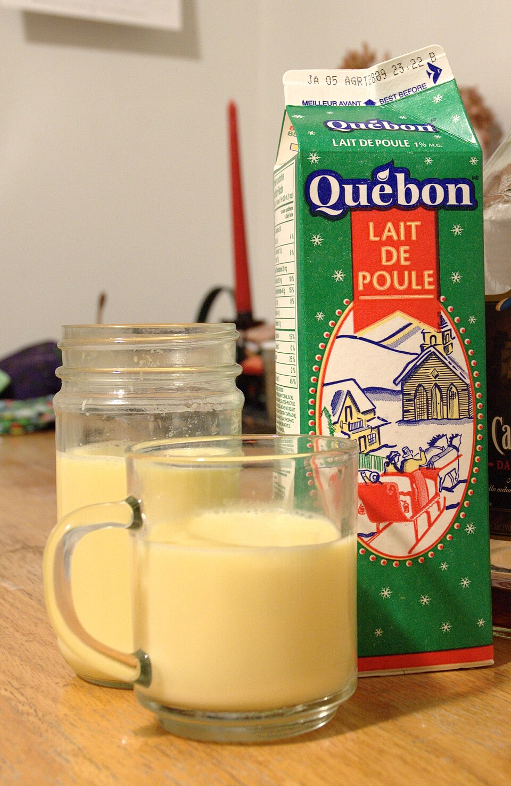

Eggnog

Description
This is a recipe for a non-alcoholic version of eggnog.
Whether you're having family over for the holidays, or just feel like a nice tall glass of eggnog in the middle of August, this easy to follow recipe is sure to make you smile.
Ingredients
- 2 Cups Heavy Cream
- 1 and 1/2 Teaspoons Nutmeg, Freshly Grated
- 3 Cups Whole Milk
- 1 Tablespoon Vanilla Extract
- 3 Eggs, Room Temperature
- 4 Egg Yolks, Room Temperature
- 1/3 Cup Sugar
- 1/4 Teaspoon Salt
- Whipped Cream (Optional, for Topping)
- Ground Cinnamon (Optional, for Topping)
- Extra Nutmeg (Optional, for Topping)
Steps
- Place heavy cream and grated nutmeg in a large mixing bowl with a fine mesh strainer on top. Set aside.
- In a medium saucepan, combine milk and vanilla. Cook over medium heat, swirling occasionally, until bubbles form around the sides and the milk starts steaming.
- In another mixing bowl, vigorously beat together the eggs, yolks, sugar, and salt for approximately 3-5 minutes until the mixture is thickened and pale. Add in the milk in a slow stream and whisk to incorporate. Pour the mixture back into the saucepan and cook over low heat, stirring constantly with a wooden spoon for about 6 minutes, or until the mixture reaches 165 F as read on a cooking thermometer. Immediately strain into the mixing bowl with the heavy cream.
- Place in refrigerator uncovered and allow the eggnog to cool completely for at least 2 hours.
- To serve, pour eggnog into glasses filling only ¾ of the glass. Top with whipped cream, cinnamon, and freshly grated nutmeg.
- Enjoy your treat!
Home